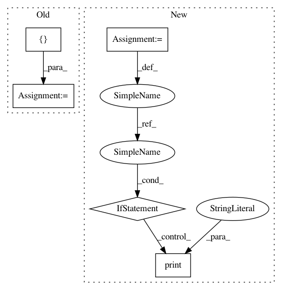

6edc4e4cf3c2ed91ef5d2f57759f53645644628c,setup.py,,,#,7
Before Change
else:
// assume linux otherwise, unless we support Windows in the future...
print("Platform Detection: Linux. Link to liblapacke...")
extra_link_args = ["-llapacke -llapack -lblas"]
include_dirs = (numpy.distutils.misc_util.get_numpy_include_dirs() +
["/usr/include/lapacke"])
extensions = cythonize([
Extension(
"libact.query_strategies._variance_reduction",
["libact/query_strategies/src/variance_reduction/variance_reduction.c"],
extra_link_args=extra_link_args,
extra_compile_args=["-std=c11"],
include_dirs=include_dirs,
),
Extension(
"libact.query_strategies._hintsvm",
sources=["libact/query_strategies/_hintsvm.pyx",
"libact/query_strategies/src/hintsvm/libsvm_helper.c",
"libact/query_strategies/src/hintsvm/svm.cpp"],
include_dirs=[numpy.get_include(),
"libact/query_strategies/src/hintsvm/"],
extra_compile_args=["-lstdc++"],
),
])
cmdclasses = {"build_ext": build_ext}
setup_requires = [
]
install_requires = [
After Change
from setuptools import setup, Extension
import sys
BUILD_HINTSVM = int(os.environ.get("LIBACT_BUILD_HINTSVM", 1))
BUILD_VARIANCE_REDUCTION = int(os.environ.get("LIBACT_BUILD_VARIANCE_REDUCTION", 1))
on_rtd = os.environ.get("READTHEDOCS", None) == "True"
// read the docs could not compile numpy and c extensions
if on_rtd:
extensions = []
cmdclasses = {}
setup_requires = []
install_requires = []
tests_require = []
else:
from Cython.Build import cythonize
from Cython.Distutils import build_ext
import numpy
import numpy.distutils
if sys.platform == "darwin":
print("Platform Detection: Mac OS X. Link to openblas...")
extra_link_args = ["-L/opt/local/lib -lopenblas"]
include_dirs = (numpy.distutils.misc_util.get_numpy_include_dirs() +
["/opt/local/include"])
else:
// assume linux otherwise, unless we support Windows in the future...
print("Platform Detection: Linux. Link to liblapacke...")
extra_link_args = []
include_dirs = (numpy.distutils.misc_util.get_numpy_include_dirs() +
["/usr/include/"])
libraries = ["lapacke", "lapack", "blas"]
library_dirs = ["/usr/lib"]
extensions = []
if BUILD_VARIANCE_REDUCTION:
print("Build VarianceReduction...")
extensions.append(
Extension(
"libact.query_strategies._variance_reduction",
["libact/query_strategies/src/variance_reduction/variance_reduction.c"],
extra_link_args=extra_link_args,
extra_compile_args=["-std=c11"],
include_dirs=include_dirs,
libraries=libraries,
library_dirs=library_dirs,
)
)
if BUILD_HINTSVM:
print("Build HintSVM...")
extensions.append(
Extension(
"libact.query_strategies._hintsvm",
sources=["libact/query_strategies/_hintsvm.pyx",
"libact/query_strategies/src/hintsvm/libsvm_helper.c",
"libact/query_strategies/src/hintsvm/svm.cpp"],
include_dirs=[numpy.get_include(),
"libact/query_strategies/src/hintsvm/"],
extra_compile_args=["-lstdc++"],
)
)
extensions = cythonize(extensions)
cmdclasses = {"build_ext": build_ext}
setup_requires = [
]
In pattern: SUPERPATTERN
Frequency: 3
Non-data size: 5
Instances
Project Name: ntucllab/libact
Commit Name: 6edc4e4cf3c2ed91ef5d2f57759f53645644628c
Time: 2019-05-05
Author: yangarbiter@gmail.com
File Name: setup.py
Class Name:
Method Name:
Project Name: TheAlgorithms/Python
Commit Name: f754c0d31ffe9a6be990fecbc32c55fa97271d9c
Time: 2020-09-11
Author: 33205665+BriseBalloches@users.noreply.github.com
File Name: searches/jump_search.py
Class Name:
Method Name:
Project Name: akkana/scripts
Commit Name: 9a88eac5a23150345337d62e83621316cf2d986f
Time: 2019-09-21
Author: akkana@shallowsky.com
File Name: censusdata.py
Class Name:
Method Name: codesFromZipFile
Project Name: ntucllab/libact
Commit Name: 6edc4e4cf3c2ed91ef5d2f57759f53645644628c
Time: 2019-05-05
Author: yangarbiter@gmail.com
File Name: setup.py
Class Name:
Method Name: